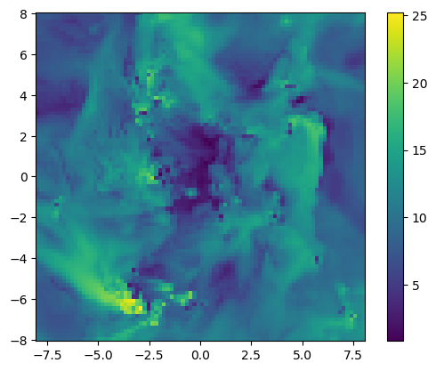

5. Mask/Select/Map/Filter/Metaprogramming...
- Learn how to extract data from the data table with JuliaDB and Mera functions
- Filter the data table according to one or several conditions
- Extract data from a filtered data table and use it for further calculations
- Extend the data table with new columns/variables
- Mask data with different methods and apply it to some functions
Load The Data
using Mera
info = getinfo(400, "../../testing/simulations/manu_sim_sf_L14");
gas = gethydro(info, lmax=8, smallr=1e-5);
particles = getparticles(info)
clumps = getclumps(info);[Mera]: 2020-02-08T20:56:19.834
Code: RAMSES
output [400] summary:
mtime: 2018-09-05T09:51:55.041
ctime: 2019-11-01T17:35:21.051
=======================================================
simulation time: 594.98 [Myr]
boxlen: 48.0 [kpc]
ncpu: 2048
ndim: 3
-------------------------------------------------------
amr: true
level(s): 6 - 14 --> cellsize(s): 750.0 [pc] - 2.93 [pc]
-------------------------------------------------------
hydro: true
hydro-variables: 7 --> (:rho, :vx, :vy, :vz, :p, :var6, :var7)
hydro-descriptor: (:density, :velocity_x, :velocity_y, :velocity_z, :thermal_pressure, :passive_scalar_1, :passive_scalar_2)
γ: 1.6667
-------------------------------------------------------
gravity: true
gravity-variables: (:epot, :ax, :ay, :az)
-------------------------------------------------------
particles: true
- Npart: 5.091500e+05
- Nstars: 5.066030e+05
- Ndm: 2.547000e+03
particle variables: (:vx, :vy, :vz, :mass, :birth)
-------------------------------------------------------
clumps: true
clump-variables: (:index, :lev, :parent, :ncell, :peak_x, :peak_y, :peak_z, Symbol("rho-"), Symbol("rho+"), :rho_av, :mass_cl, :relevance)
-------------------------------------------------------
namelist-file: false
timer-file: false
compilation-file: true
makefile: true
patchfile: true
=======================================================
[Mera]: Get hydro data: 2020-02-08T20:56:27.064
Key vars=(:level, :cx, :cy, :cz)
Using var(s)=(1, 2, 3, 4, 5, 6, 7) = (:rho, :vx, :vy, :vz, :p, :var6, :var7)
domain:
xmin::xmax: 0.0 :: 1.0 ==> 0.0 [kpc] :: 48.0 [kpc]
ymin::ymax: 0.0 :: 1.0 ==> 0.0 [kpc] :: 48.0 [kpc]
zmin::zmax: 0.0 :: 1.0 ==> 0.0 [kpc] :: 48.0 [kpc]
Reading data...
100%|███████████████████████████████████████████████████| Time: 0:02:07
Memory used for data table :71.28007793426514 MB
-------------------------------------------------------
[Mera]: Get particle data: 2020-02-08T20:58:39.435
Key vars=(:level, :x, :y, :z, :id)
Using var(s)=(1, 2, 3, 4, 5) = (:vx, :vy, :vz, :mass, :birth)
domain:
xmin::xmax: 0.0 :: 1.0 ==> 0.0 [kpc] :: 48.0 [kpc]
ymin::ymax: 0.0 :: 1.0 ==> 0.0 [kpc] :: 48.0 [kpc]
zmin::zmax: 0.0 :: 1.0 ==> 0.0 [kpc] :: 48.0 [kpc]
Found 5.089390e+05 particles
Memory used for data table :34.947275161743164 MB
-------------------------------------------------------
[Mera]: Get clump data: 2020-02-08T20:58:41.769
domain:
xmin::xmax: 0.0 :: 1.0 ==> 0.0 [kpc] :: 48.0 [kpc]
ymin::ymax: 0.0 :: 1.0 ==> 0.0 [kpc] :: 48.0 [kpc]
zmin::zmax: 0.0 :: 1.0 ==> 0.0 [kpc] :: 48.0 [kpc]
Read 12 colums:
Symbol[:index, :lev, :parent, :ncell, :peak_x, :peak_y, :peak_z, Symbol("rho-"), Symbol("rho+"), :rho_av, :mass_cl, :relevance]
Memory used for data table :61.77734375 KB
-------------------------------------------------------Select From Data Table
Select a single column/variable
By using JuliaDB or Mera functions
using JuliaDBThe JuliaDB data table is stored in the data-field of any DataSetType. Extract an existing column (variable):
select(gas.data, :rho) # JuliaDB849332-element Array{Float64,1}:
1.0e-5
1.0e-5
1.0e-5
1.0e-5
1.0e-5
1.0e-5
1.0e-5
1.0e-5
1.0e-5
1.0e-5
1.0e-5
1.0e-5
1.0e-5
⋮
0.00010967104288285959
0.0001088040126114162
0.00010915603617815434
0.00010917096551347797
0.00012465438542871006
0.00011934527871880502
0.00011294656300014925
0.00011110068692986109
0.00010901341218606515
0.00010849404903183988
0.00010900588395976569
0.00010910219163333514Pass the entire DataSetType (here gas) to the Mera function getvar to extract the selected variable or derived quantity from the data table. Call getvar() to get a list of the predefined quantities.
getvar(gas, :rho) # MERA849332-element Array{Float64,1}:
1.0e-5
1.0e-5
1.0e-5
1.0e-5
1.0e-5
1.0e-5
1.0e-5
1.0e-5
1.0e-5
1.0e-5
1.0e-5
1.0e-5
1.0e-5
⋮
0.00010967104288285959
0.0001088040126114162
0.00010915603617815434
0.00010917096551347797
0.00012465438542871006
0.00011934527871880502
0.00011294656300014925
0.00011110068692986109
0.00010901341218606515
0.00010849404903183988
0.00010900588395976569
0.00010910219163333514Select several columns
By selecting several columns a new JuliaDB databse is returned:
select(gas.data, (:rho, :level)) #JuliaDBTable with 849332 rows, 2 columns:
rho level
──────────────────
1.0e-5 6
1.0e-5 6
1.0e-5 6
1.0e-5 6
1.0e-5 6
1.0e-5 6
1.0e-5 6
1.0e-5 6
1.0e-5 6
1.0e-5 6
1.0e-5 6
1.0e-5 6
⋮
0.000108804 8
0.000109156 8
0.000109171 8
0.000124654 8
0.000119345 8
0.000112947 8
0.000111101 8
0.000109013 8
0.000108494 8
0.000109006 8
0.000109102 8The getvar function returns a dictionary containing the extracted arrays:
getvar(gas, [:rho, :level]) # MERADict{Any,Any} with 2 entries:
:level => [6.0, 6.0, 6.0, 6.0, 6.0, 6.0, 6.0, 6.0, 6.0, 6.0 … 8.0, 8.0, 8.0…
:rho => [1.0e-5, 1.0e-5, 1.0e-5, 1.0e-5, 1.0e-5, 1.0e-5, 1.0e-5, 1.0e-5, 1.…Select one or more columns and get a tuple of vectors:
vtuple = columns(gas.data, (:rho, :level)) # JuliaDB(rho = [1.0e-5, 1.0e-5, 1.0e-5, 1.0e-5, 1.0e-5, 1.0e-5, 1.0e-5, 1.0e-5, 1.0e-5, 1.0e-5 … 0.00010915603617815434, 0.00010917096551347797, 0.00012465438542871006, 0.00011934527871880502, 0.00011294656300014925, 0.00011110068692986109, 0.00010901341218606515, 0.00010849404903183988, 0.00010900588395976569, 0.00010910219163333514], level = [6, 6, 6, 6, 6, 6, 6, 6, 6, 6 … 8, 8, 8, 8, 8, 8, 8, 8, 8, 8])propertynames(vtuple)(:rho, :level)vtuple.rho849332-element Array{Float64,1}:
1.0e-5
1.0e-5
1.0e-5
1.0e-5
1.0e-5
1.0e-5
1.0e-5
1.0e-5
1.0e-5
1.0e-5
1.0e-5
1.0e-5
1.0e-5
⋮
0.00010967104288285959
0.0001088040126114162
0.00010915603617815434
0.00010917096551347797
0.00012465438542871006
0.00011934527871880502
0.00011294656300014925
0.00011110068692986109
0.00010901341218606515
0.00010849404903183988
0.00010900588395976569
0.00010910219163333514Filter by Condition
With JuliaDB (example A)
Get all the data corresponding to cells/rows with level=6. Here, the variable p is used as placeholder for rows. A new JuliaDB data table is returend:
filtered_db = filter(p->p.level==6, gas.data ) # JuliaDB
# see the reduced row numberTable with 240956 rows, 11 columns:
Columns:
# colname type
────────────────────
1 level Int64
2 cx Int64
3 cy Int64
4 cz Int64
5 rho Float64
6 vx Float64
7 vy Float64
8 vz Float64
9 p Float64
10 var6 Float64
11 var7 Float64With Macro Expression (example A)
(see the documentation at: https://piever.github.io/JuliaDBMeta.jl/stable/ )
using JuliaDBMeta┌ Info: Precompiling JuliaDBMeta [2c06ca41-a429-545c-b8f0-5ca7dd64ba19]
└ @ Base loading.jl:1273filtered_db = @filter gas.data :level==6 # JuliaDBMetaTable with 240956 rows, 11 columns:
Columns:
# colname type
────────────────────
1 level Int64
2 cx Int64
3 cy Int64
4 cz Int64
5 rho Float64
6 vx Float64
7 vy Float64
8 vz Float64
9 p Float64
10 var6 Float64
11 var7 Float64With JuliaDB (example B)
Get all cells/rows with densities >= 3 Msol/pc^3. Since the data is given in code units, we need to convert from the given physical units:
density = 3. / gas.scale.Msol_pc3
filtered_db = filter(p->p.rho>= density, gas.data ) # JuliaDBTable with 210 rows, 11 columns:
Columns:
# colname type
────────────────────
1 level Int64
2 cx Int64
3 cy Int64
4 cz Int64
5 rho Float64
6 vx Float64
7 vy Float64
8 vz Float64
9 p Float64
10 var6 Float64
11 var7 Float64With Macro Expression (example B)
density = 3. /gas.scale.Msol_pc3
filtered_db = @filter gas.data :rho>= density # JuliaDBMetaTable with 210 rows, 11 columns:
Columns:
# colname type
────────────────────
1 level Int64
2 cx Int64
3 cy Int64
4 cz Int64
5 rho Float64
6 vx Float64
7 vy Float64
8 vz Float64
9 p Float64
10 var6 Float64
11 var7 Float64Get a Quantity/Variable from The Filtered Data Table
Calculate the mass for each cell and the sum:
mass_tot = getvar(gas, :mass, :Msol) # the full data table
sum(mass_tot)3.0968754148332745e10The same calculation is possible for the filtered data base which has to be passed together with the original object, here: gas
mass_filtered_tot = getvar(gas, :mass, :Msol, filtered_db=filtered_db) # the filtered data table
sum(mass_filtered_tot)1.4862767967535206e10Create a New DataSetType from a Filtered Data Table
A new DataSetType can be constructed for the filtered data table that can be passed to the functions.
density = 3. /gas.scale.Msol_pc3
filtered_db = @filter gas.data :rho >= density
gas_new = construct_datatype(filtered_db, gas);# Both are now of HydroDataType and include the same information about the simulation properties (besides the canged data table)
println( typeof(gas) )
println( typeof(gas_new) )HydroDataType
HydroDataTypemass_filtered_tot = getvar(gas_new, :mass, :Msol)
sum(mass_filtered_tot)1.4862767967535206e10Filter by Multiple Conditions
With JuliaDB
Get the mass of all cells/rows with densities >= 3 Msol/pc^3 that is within the disk radius of 3 kpc and 2 kpc from the plane:
boxlen = info.boxlen
cv = boxlen/2. # box-center
density = 3. /gas.scale.Msol_pc3
radius = 3. /gas.scale.kpc
height = 2. /gas.scale.kpc
# filter cells/rows that contain rho greater equal density
filtered_db = filter(p->p.rho >= density, gas.data )
# filter cells/rows lower equal the defined radius and height
# (convert the cell number to a position according to its cellsize and relative to the box center)
filtered_db = filter(row-> sqrt( (row.cx * boxlen /2^row.level - cv)^2 + (row.cy * boxlen /2^row.level - cv)^2) <= radius &&
abs(row.cz * boxlen /2^row.level - cv) <= height, filtered_db)
var_filtered = getvar(gas, :mass, filtered_db=filtered_db, unit=:Msol)
sum(var_filtered) # [Msol]2.750632450062189e9Use Pipeline Macros
boxlen = info.boxlen
cv = boxlen/2.
density = 3. /gas.scale.Msol_pc3
radius = 3. /gas.scale.kpc
height = 2. /gas.scale.kpc
filtered_db = @apply gas.data begin
@where :rho >= density
@where sqrt( (:cx * boxlen/2^:level - cv)^2 + (:cy * boxlen/2^:level - cv)^2 ) <= radius
@where abs(:cz * boxlen/2^:level -cv) <= height
end
var_filtered = getvar(gas, :mass, filtered_db=filtered_db, unit=:Msol)
sum(var_filtered) # [Msol]2.750632450062189e9External Functions With JuliaDB
boxlen = info.boxlen
function r(x,y,level,boxlen)
return sqrt((x * boxlen /2^level - boxlen/2.)^2 + (y * boxlen /2^level - boxlen/2.)^2)
end
function h(z,level,boxlen)
return abs(z * boxlen /2^level - boxlen/2.)
end
density = 3. /gas.scale.Msol_pc3
radius = 3. /gas.scale.kpc
height = 2. /gas.scale.kpc
filtered_db = filter(row-> row.rho >= density &&
r(row.cx,row.cy, row.level, boxlen) <= radius &&
h(row.cz,row.level, boxlen) <= height, gas.data)
var_filtered = getvar(gas, :mass, filtered_db=filtered_db, unit=:Msol)
sum(var_filtered) # [Msol]2.750632450062189e9External Functions With Macro Expression
boxlen = info.boxlen
cv = boxlen/2.
density = 3. /gas.scale.Msol_pc3
radius = 3. /gas.scale.kpc
height = 2. /gas.scale.kpc
function p(val, level, boxlen)
cv = boxlen/2
return val * boxlen /2^level - cv
end
filtered_db = @apply gas.data begin
@where :rho >= density
@where sqrt( p(:cx, :level, boxlen)^2 + p(:cy, :level, boxlen)^2 ) <= radius
@where abs( p(:cz, :level, boxlen) ) <= height
end
var_filtered = getvar(gas, :mass, filtered_db=filtered_db, unit=:Msol)
sum(var_filtered) # [Msol]2.750632450062189e9Compare With Predefined Functions
Compare the previous calculations with the predefined subregion function: The subregion function takes the intersected cells of the range borders into account (default):
density = 3. /gas.scale.Msol_pc3 # in code units
sub_region = subregion(gas, :cylinder, radius=3., height=2., center=[:boxcenter], range_unit=:kpc, verbose=false ) # default: cell=true
filtered_db = @filter sub_region.data :rho >= density
var_filtered = getvar(gas, :mass, :Msol, filtered_db=filtered_db)
sum(var_filtered) # [Msol]2.9388306102361355e9By setting the keyword cell=false, only the cell-centres within the defined region are taken into account (as in the calculations in the previous section).
density = 3. /gas.scale.Msol_pc3 # in code units
sub_region = subregion(gas, :cylinder, radius=3., height=2., center=[:boxcenter], range_unit=:kpc, cell=false, verbose=false )
filtered_db = @filter sub_region.data :rho >= density
var_filtered = getvar(gas, :mass, :Msol, filtered_db=filtered_db)
sum(var_filtered)2.750632450062189e9Extend the Data Table
Add costum columns/variables to the data that can be automatically processed in some functions: (note: to take advantage of the Mera unit management, store new data in code-units)
# calculate the Mach number in each cell
mach = getvar(gas, :mach); # add the extracted Mach number (1dim-array) to the data in the object "gas"
# the array has the same length and order (rows/cells) as in the data table
# push a column at the end of the table:
# transform(data-table, key => new-data)
gas.data = transform(gas.data, :mach => mach) # JuliaDBTable with 849332 rows, 12 columns:
Columns:
# colname type
────────────────────
1 level Int64
2 cx Int64
3 cy Int64
4 cz Int64
5 rho Float64
6 vx Float64
7 vy Float64
8 vz Float64
9 p Float64
10 var6 Float64
11 var7 Float64
12 mach Float64proj_z = projection(gas, :mach, xrange=[-8.,8.], yrange=[-8.,8.], zrange=[-2.,2.], center=[:boxcenter], range_unit=:kpc);[Mera]: 2020-02-08T20:59:42.246
center: [0.5, 0.5, 0.5] ==> [24.0 [kpc] :: 24.0 [kpc] :: 24.0 [kpc]]
domain:
xmin::xmax: 0.3333333 :: 0.6666667 ==> 16.0 [kpc] :: 32.0 [kpc]
ymin::ymax: 0.3333333 :: 0.6666667 ==> 16.0 [kpc] :: 32.0 [kpc]
zmin::zmax: 0.4583333 :: 0.5416667 ==> 22.0 [kpc] :: 26.0 [kpc]
Selected var(s)=(:mach, :sd)
100%|███████████████████████████████████████████████████| Time: 0:00:07using PyPlot
imshow( ( permutedims(proj_z.maps[:mach]) ), origin="lower", extent=proj_z.cextent)
colorbar();
Remove the column :mach from the table:
gas.data = select(gas.data, Not(:mach)) # select all columns, not :machTable with 849332 rows, 11 columns:
Columns:
# colname type
────────────────────
1 level Int64
2 cx Int64
3 cy Int64
4 cz Int64
5 rho Float64
6 vx Float64
7 vy Float64
8 vz Float64
9 p Float64
10 var6 Float64
11 var7 Float64Masking
Many functions in MERA provide the opportunity to use a mask on selected data without changing the content in the data table. Here we present several methods to prepare a mask and apply it to some functions. A created mask is an array of type: MaskType, which can be Array{Bool,1} or BitArray{1}. A masked cell/row corresponds to a false.
Version 1: External Function
Create an array which represents the cells with the selected condition by true. The function checks if the following requirement is true or false for each row/cell in the data table:
function ftest(value)
density = (4. / gas.scale.Msol_pc3)
if value < density
return true
else
return false
end
end
mask_v1 = map(row->ftest(row.rho), gas.data);
println( length(mask_v1) )
println( typeof(mask_v1) )849332
Array{Bool,1}Version 2: Short Syntax
Example 1
mask_v2 = map(row->row.rho < 4. / gas.scale.Msol_pc3, gas.data);
println( length(mask_v2) )
println( typeof(mask_v2) )849332
Array{Bool,1}Example 2
mask_v2b = getvar(gas, :rho, :Msol_pc3) .> 1. ;
println( length(mask_v2b) )
println( typeof(mask_v2b) )849332
BitArray{1}Version 3: Longer Syntax
rho_array = select(gas.data, :rho);
mask_v3 = rho_array .< 1. / gas.scale.Msol_pc3;
println( length(mask_v3) )
println( typeof(mask_v3) )849332
BitArray{1}Combine Multiple Masks
# create individual masks for different density and temperature regions
mask_h = getvar(gas, :rho, :nH) .< 10. # cm-3
mask_l = getvar(gas, :rho, :nH) .> 1e-2 # cm-3
mask_T1 = getvar(gas, :Temperature, :K) .< 1e4 # K
mask_T2 = getvar(gas, :Temperature, :K) .> 1e3 # K
# combine several masks to one
mask_tot = mask_h .* mask_l .* mask_T1 .* mask_T2
println( length(mask_tot) )
println( typeof(mask_tot) )28320979
BitVectorSome Functions With Masking Functionality
The masked rows are not considered in the calculations (mask-element = false ).
Examples
Total Mass
mask = map(row->row.rho < 1. / gas.scale.Msol_pc3, gas.data);
mtot_masked = msum(gas, :Msol, mask=mask)
mtot = msum(gas, :Msol)
println()
println( "Gas Mtot masked: ", mtot_masked , " Msol" )
println( "Gas Mtot: ", mtot , " Msol" )
println()Gas Mtot masked: 1.336918953133308e10 Msol
Gas Mtot: 3.0968754148332745e10 Msolmask = map(row->row.birth < 100. / particles.scale.Myr, particles.data);
mtot_masked = msum(particles, :Msol, mask=mask)
mtot = msum(particles, :Msol)
println()
println( "Particles Mtot masked: ", mtot_masked , " Msol" )
println( "Particles Mtot: ", mtot , " Msol" )
println()Particles Mtot masked: 1.4537556611888414e7 Msol
Particles Mtot: 5.804426008528437e9 Msolmask = map(row->row.mass_cl < 1e6 / clumps.scale.Msol, clumps.data);
mtot_masked = msum(clumps, :Msol, mask=mask)
mtot = msum(clumps, :Msol)
println()
println( "Clumps Mtot masked: ", mtot_masked , " Msol" )
println( "Clumps Mtot: ", mtot , " Msol" )
println()Clumps Mtot masked: 2.926390055686605e7 Msol
Clumps Mtot: 1.3743280681841677e10 MsolCenter-Of-Mass
mask = map(row->row.rho < 100. / gas.scale.nH, gas.data);
com_gas_masked = center_of_mass(gas, :kpc, mask=mask)
com_gas = center_of_mass(gas, :kpc)
println()
println( "Gas COM masked: ", com_gas_masked , " kpc" )
println( "Gas COM: ", com_gas , " kpc" )
println()Gas COM masked: (23.632781376611646, 24.017935187730938, 24.078280687627124) kpc
Gas COM: (23.47221401632259, 23.93931869865653, 24.08483637116779) kpcmask = map(row->row.birth < 100. / particles.scale.Myr, particles.data);
com_particles_masked = center_of_mass(particles, :kpc, mask=mask)
com_particles = center_of_mass(particles, :kpc)
println()
println( "Particles COM masked: ", com_particles_masked , " kpc" )
println( "Particles COM: ", com_particles , " kpc" )
println()Particles COM masked: (22.766374936557934, 24.817294529838456, 24.020065595650212) kpc
Particles COM: (22.891354761211332, 24.174147282680273, 24.003205056545575) kpc# calculate joint center-of-mass from gas and particles
mask1 = map(row->row.rho < 100. / gas.scale.nH, gas.data); # mask for the hydro data
mask2 = map(row->row.birth < 100. / particles.scale.Myr, particles.data); # mask for the particle data
println( "Joint COM (Gas + Particles) masked: ", center_of_mass([gas,particles], :kpc, mask=[mask1, mask2]) , " kpc" )
println( "Joint COM (Gas + Particles): ", center_of_mass([gas,particles], :kpc) , " kpc" )Joint COM (Gas + Particles) masked: (23.632014753139174, 24.01864248583754, 24.078229177095928) kpc
Joint COM (Gas + Particles): (23.380528865533876, 23.976384982693947, 24.07195135758772) kpcmask = map(row->row.mass_cl < 1e6 / clumps.scale.Msol, clumps.data);
com_clumps_masked = center_of_mass(clumps, mask=mask)
com_clumps = center_of_mass(clumps)
println()
println( "Clumps COM masked:", com_clumps_masked .* clumps.scale.kpc, " kpc" )
println( "Clumps COM: ", com_clumps .* clumps.scale.kpc, " kpc" )
println()Clumps COM masked:(22.979676622296815, 23.22447986984898, 24.11056806473746) kpc
Clumps COM: (23.135765457064576, 23.741712325649264, 24.0050127185862) kpcBulk-Velocity
mask = map(row->row.rho < 100. / gas.scale.nH, gas.data);
bv_gas_masked = bulk_velocity(gas, :km_s, mask=mask)
bv_gas = bulk_velocity(gas, :km_s)
println()
println( "Gas bulk velocity masked: ", bv_gas_masked , " km/s" )
println( "Gas bulk velocity: ", bv_gas , " km/s" )
println()Gas bulk velocity masked: (-0.046336703401138456, -6.60993479840688, -1.000280146674773) km/s
Gas bulk velocity: (-1.1999253584798182, -10.678485153330122, -0.44038538452508785) km/smask = map(row->row.birth < 100. / particles.scale.Myr, particles.data);
bv_particles_masked = bulk_velocity(particles, :km_s, mask=mask)
bv_particles = bulk_velocity(particles, :km_s)
println()
println( "Particles bulk velocity masked: ", bv_particles_masked , " km/s" )
println( "Particles bulk velocity: ", bv_particles , " km/s" )
println()Particles bulk velocity masked: (-27.702254113836513, -7.532075727552787, -1.3273993940211153) km/s
Particles bulk velocity: (-11.623422700314535, -18.440572802490234, -0.3291927731417528) km/sWeighted Statistics
(It is also possible to use the mask within the getvar function)
maskgas = map(row->row.rho < 100. / gas.scale.nH, gas.data);
maskpart = map(row->row.birth < 100. / particles.scale.Myr, particles.data);
maskclump = map(row->row.mass_cl < 1e7 / clumps.scale.Msol, clumps.data);
stats_gas_masked = wstat( getvar(gas, :vx, :km_s), weight=getvar(gas, :mass ), mask=maskgas);
stats_particles_masked = wstat( getvar(particles, :vx, :km_s), weight=getvar(particles, :mass ), mask=maskpart);
stats_clumps_masked = wstat( getvar(clumps, :peak_x, :kpc ), weight=getvar(clumps, :mass_cl), mask=maskclump) ;
println( "Gas <vx>_cells masked : ", stats_gas_masked.mean, " km/s (mass weighted)" )
println( "Particles <vx>_particles masked : ", stats_particles_masked.mean, " km/s (mass weighted)" )
println( "Clumps <peak_x>_clumps masked : ", stats_clumps_masked.mean, " kpc (mass weighted)" )
println()Gas <vx>_cells masked : -0.04633670340114798 km/s (mass weighted)
Particles <vx>_particles masked : -27.702254113836517 km/s (mass weighted)
Clumps <peak_x>_clumps masked : 22.907689025275953 kpc (mass weighted)stats_gas = wstat( getvar(gas, :vx, :km_s), weight=getvar(gas, :mass ));
stats_particles = wstat( getvar(particles, :vx, :km_s), weight=getvar(particles, :mass ));
stats_clumps = wstat( getvar(clumps, :peak_x, :kpc ), weight=getvar(clumps, :mass_cl)) ;
println( "Gas <vx>_allcells : ", stats_gas.mean, " km/s (mass weighted)" )
println( "Particles <vx>_allparticles : ", stats_particles.mean, " km/s (mass weighted)" )
println( "Clumps <peak_x>_allclumps : ", stats_clumps.mean, " kpc (mass weighted)" )
println()Gas <vx>_allcells : -1.199925358479736 km/s (mass weighted)
Particles <vx>_allparticles : -11.623422700314544 km/s (mass weighted)
Clumps <peak_x>_allclumps : 23.13576545706458 kpc (mass weighted)